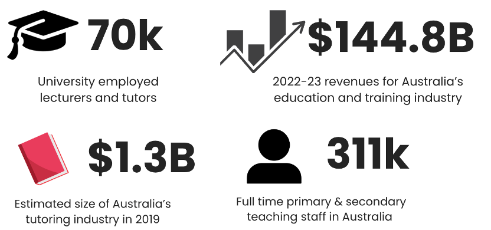
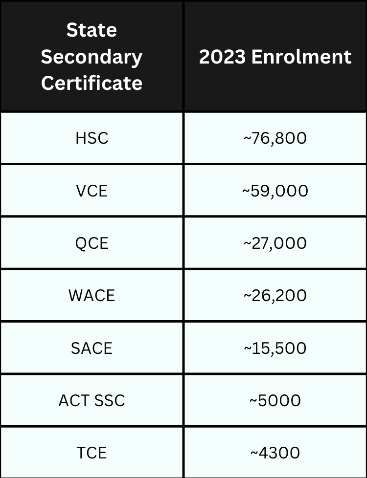
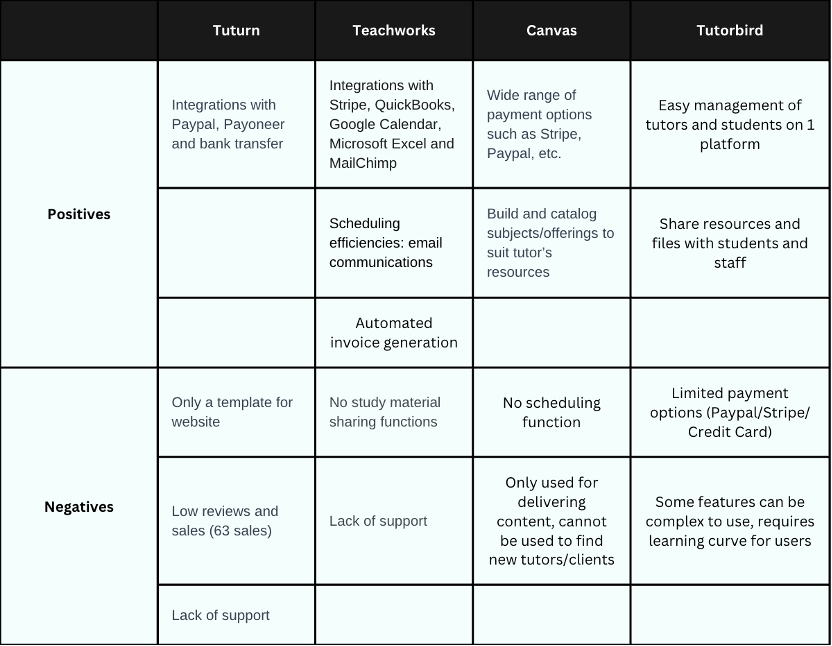
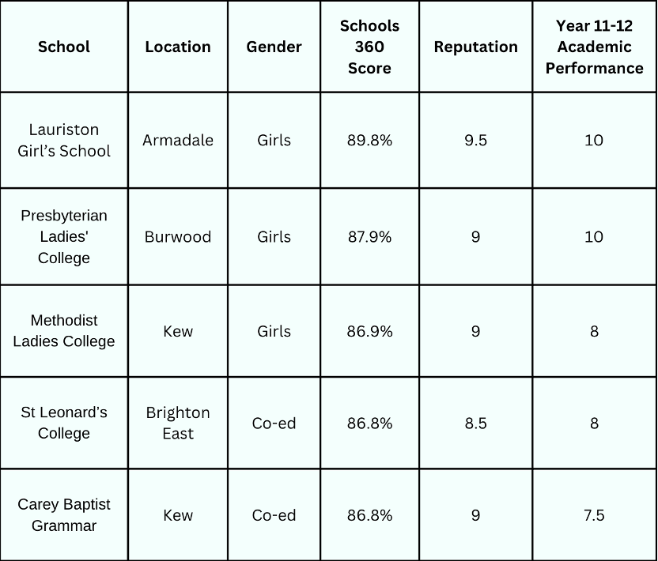

Growth Consulting, User Research, Digital Marketing
2024
Challenge: Helped an early-stage Australian edtech startup identify scalable growth opportunities and improve user targeting in a competitive online tutoring market.
Deliverables: Developed a user segmentation and pricing model, improved SEO to rank top 6 on Google, and proposed brand-aligned partnerships with nonprofit organizations.
Role: Project lead, researcher, consultant
Education is one of Australia’s largest and most prosperous industries. In 2022–23 Australia’s education and training industry had revenues of around AUD $144.8B, with an estimated total of 5.98 million students across all levels from preschool to tertiary education. The education industry also employs 8.4% of Australia’s workforce, which supports its world-class education system that attracts students from all around the world to many of its prestigious educational institutions, including 42 universities across Australia.
Summary and statistics for the Australian education industry
Summary table of Australian Secondary certificate enrolments
IBDP is an increasingly popular alternative to mainstream curriculum in Australia. In Melbourne alone, 18.4% of high demand catchments are directed toward IB World Schools offering the IB Programmes. There are currently 5,800 IBDP schools around the world and it is globally recognised.
Growth:
These statistics are provided by the Department of Education for the 2023 year. Tertiary education enrolments in 2023 were at 1.6 million students. There are approximately 70k lecturers and tutors employed across Australia, with more non-teaching students and academia available to work with.
Summary of Tertiary Education in Australia
Enrolment growth trends in Australia's education sector
Summary of Tertiary Education in Australia
Below are possible reasons that Every Minute Media could consider expanding its offering to include IB Diploma tutoring services.
Comparison of student enrolment numbers (VCAA, 2023) (QCAA, 2023) (NESA, 2023)
Our clients have done around 10 interviews at the early research stage to better understand the needs and goals of their typical users, and our team was able to create a user profile based on their early findings. The client’s current platform of choice to gather students and organise classes is Superprof.
Preliminary research on possible websites was conducted. The following table shows a comparison of their features:
Online tutoring platforms comparison
Based on the evaluation of features mentioned in Online tutoring platforms comparison, it seems that no single website is capable to combine all the desired features.
Based on the comparison, we could narrow down the scope, which we recommend a combination of Canvas LMS and Teachworks in the business to deliver the desired solution.
By leveraging Canvas LMS for tutoring operations such as running classes, uploading materials, etc., students can also access external links within the website to access recordings, online discussions and online tutors. Currently 12 out of 42 universities in Australia use this system. Since this is about 30%, one third of the students would be already familiar with the system.
Simultaneously, Teachworks is convenient for performing administrative duties such as tutor payrolls, billing and finding new clients.
There is a large potential for growth in tutoring students who are in the process of obtaining their secondary school leaving certificates. Of these, the most prominent industry with the most potential for growth is the IBDP, where demand is not currently being met by an adequate supply of tutors.
Every Minute Media could collaborate with secondary schools by contacting the coordinators and offering to provide students with tutoring services. This is a practical way to expand their business, as such collaborations could build credibility and benefit future student recruitment opportunities both nationally and internationally.
Summary chart of popular IB schools in Melbourne.
By collaborating with regional and disadvantaged secondary schools, Every Minute Media can offer online tutoring to students who may otherwise lack access to such opportunities due to their current situations. This would be especially useful in remote areas experiencing teacher shortages or in communities rebuilding their education systems after natural disasters.
According to the 2022 Teacher Supply and Demand Report published by the Victorian Department of Education, there were clear trends of secondary school teacher shortages. The highest vacancy levels were in Hume/Moreland (9.9 vacancies per 10 staff), while Goulburn and Outer Gippsland had the highest vacancies in regional areas (9.3 and 9.2 per 10 staff respectively). Outer regional areas on average had 1.1 more vacancies per 10 staff compared to metropolitan schools.
By leveraging its online platform, Every Minute Media can help close this gap by providing support for both regional and disadvantaged metropolitan students.
Collaborating with non-profits allows Every Minute Media to both support those in need and expand the reach of its services. By offering support through free tutoring or donations, the business can create social impact while also developing its brand identity and values.
Australian Schools Plus is a national non-profit that offers services to bridge the divide in educational opportunity and outcomes caused by disadvantage.
Every Minute Media can discuss partnership opportunities directly with Schools Plus, offering tutoring services or financial support aligned with the organization’s goals.
CEF supports rural and regional students by helping them access resources and services to pursue tertiary education and future opportunities. Every Minute Media could support students in meeting their academic goals and even prepare them for university by offering access to mentoring from university staff and alumni.
The client has voiced dissatisfaction with the current platform Superprof for attracting new students. Research shows that the following platforms offer similar services but with more refined search capabilities:
Functions are mostly similar to Superprof. However, the search function for parents is more detailed, including fields such as course of study, desired teaching time, desired price, and service description.
Preply also has functions similar to Superprof. Its enhanced search specificity increases the likelihood of being seen by parents with specific tutoring demands.
Besides platform alternatives, we recommend refining the content on Every Minute Media's own website to improve its search ranking and visibility on Google.
One inspiration is the website IB Geography Tutoring, run by a UK-based international school teacher. It often ranks 6th on Google when searching for “IB geography tutoring.”
Insights from IB Geography Tutoring:
Screenshots from high-ranking IB tutoring websites